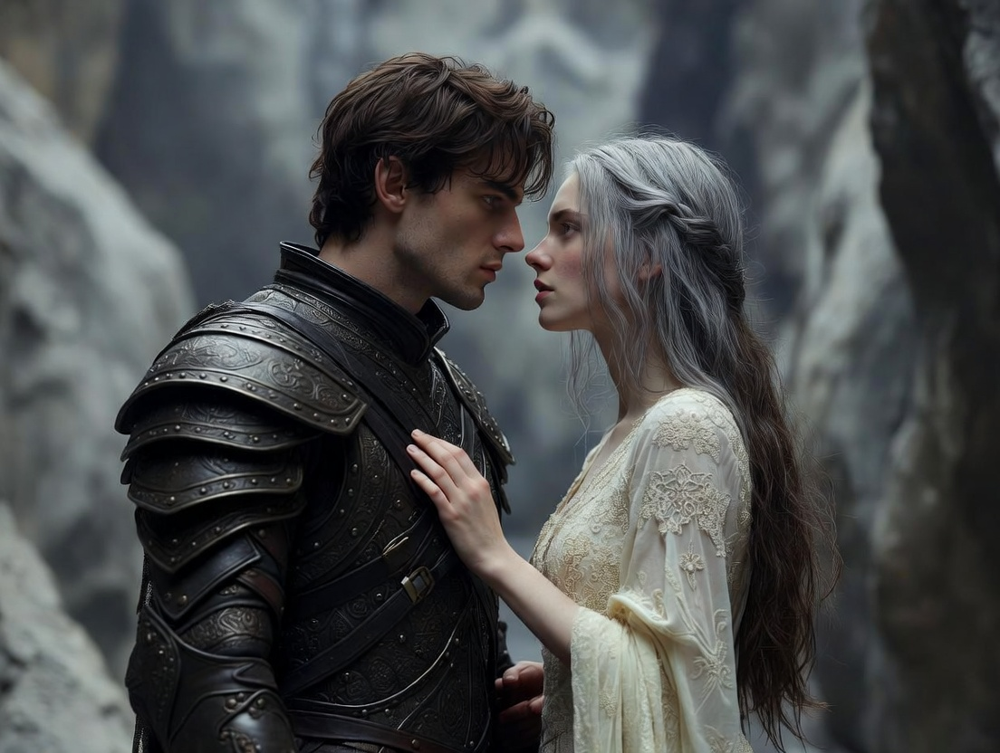
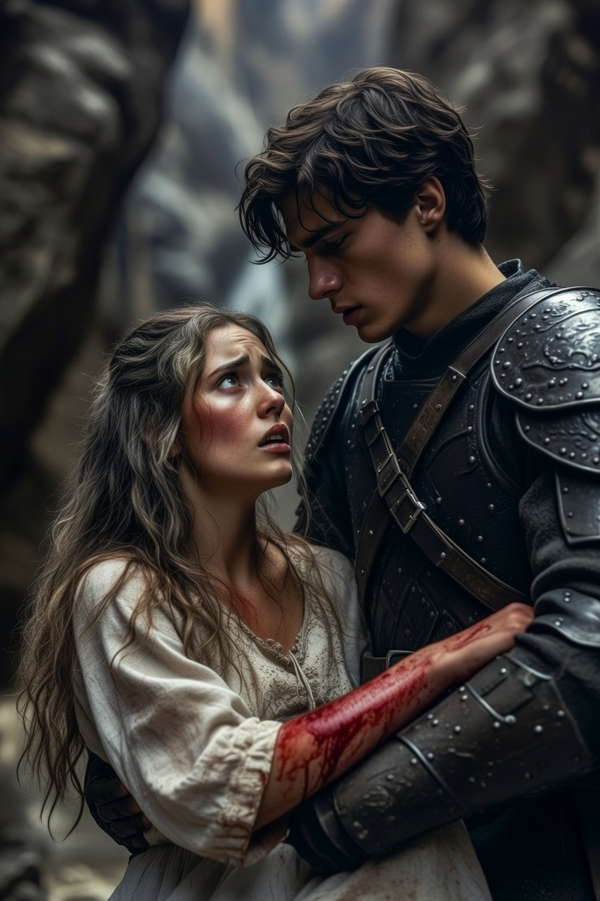
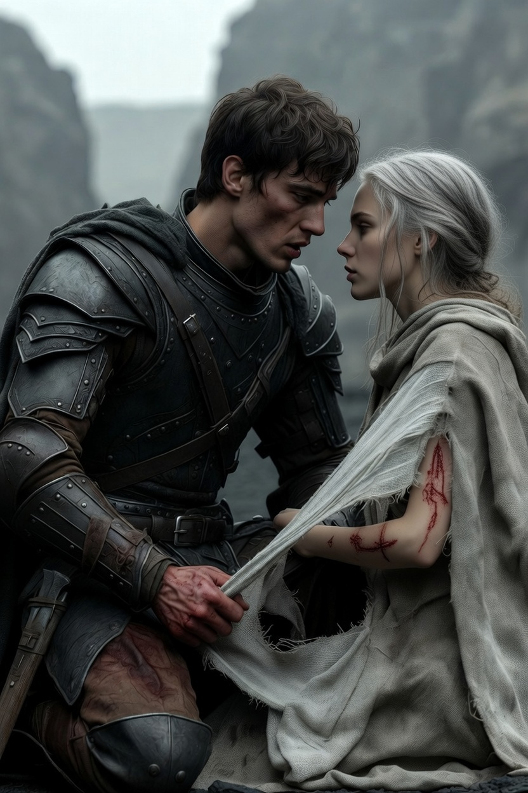
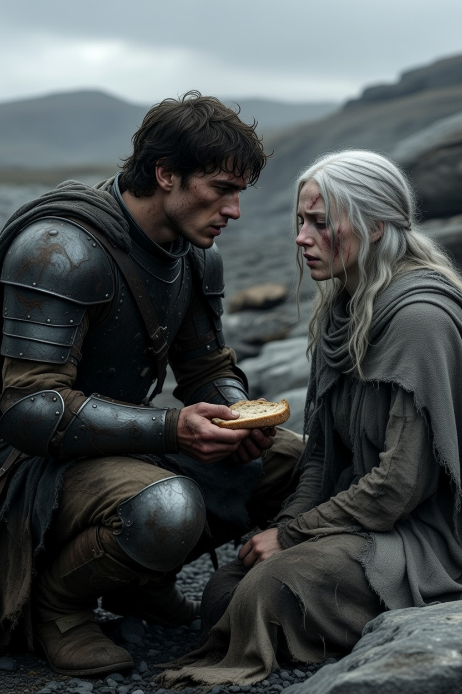
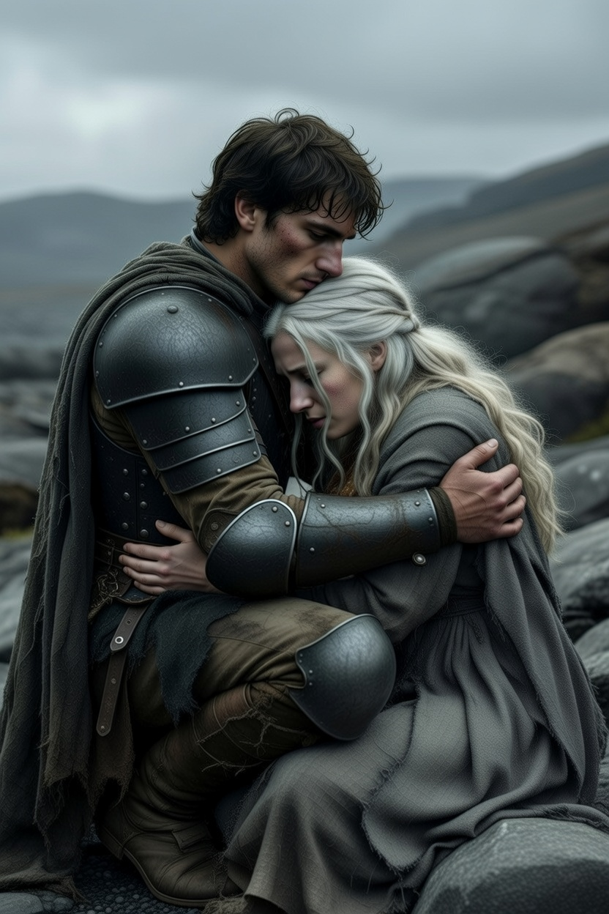

Ajánlom egy kedves barátomnak, aki keresi a pillanatban rejlő örökkévalóságot, és mer hinni a szív órájának szavában.
Amint átlépték a fennsík határát, a varázslat úgy szűnt meg, mint egy elvágott gyertya lángja. Nem volt lassú elhalványulás, sem búcsúzó vibrálás; a világ hirtelen elvesztette belső izzását, és minden élettelenné, szürkévé dermedt. Honóra felkiáltott, de nem fájdalmában, hanem a hirtelen támadt ürességtől: az ezüstös aura, amely mindig körülvette a bőrét, elpárolgott. A lány kétségbeesetten kapott a karja után, de csak a hűvös, érdes levegőt markolta. A haja, amely eddig a saját fényétől ragyogott, most egyszerű, fakó barna lett, és élettelenül omlott a vállára, mint a megszáradt széna. Nem érezte többé a mindenség lüktetését a vénáiban, csak a saját szívverésének tompa, ijesztő dobolását.
Alerion érezte, hogy a tőre markolatában lévő bűvös rúnák kihunynak, a vésett jelekből pedig elszökött a bíborvörös parázs. A fegyver, amely eddig szinte súlytalanul engedelmeskedett minden mozdulatának, hirtelen idegen tárggyá vált. A nehéz acél súlya most először nem erőt, hanem puszta terhet jelentett a derekán, mintha a gravitáció megduplázódott volna, és a föld könyörtelenül magához akarná rántani az eddigi magasságokból.
– Elment... – suttogta Honóra. A hangja vékony volt, és elveszett a puszta szeleiben. Megpróbált egy lépést tenni, de az izmai, melyeket eddig a mágia tartott feszülten, most elgyengültek. Megbotlott egy egyszerű kőben, és a térde felszakadt. A tompa ütés végighasított az idegein, egy olyan érzés, amit már elfelejtett. A vörös vér látványa sokkolta: az Időhurokban sosem vérzett, a tükörvárosban pedig csak fény áradt belőle. Az a sűrű, sötét folyadék, ami most a porba szivárgott, a halandóság pecsétje volt. Most viszont fájt. A valóság éles volt és könyörtelen, mint egy frissen köszörült penge.
– Ne félj – mondta Alerion, de a saját hangja is idegenül csengett: rekedt volt és száraz. Már nem zengett benne a lovagi eskü hatalma, csak a fáradtság. A lovag térdre borult mellé, ízületei fájdalmasan roppantak a kemény talajon. Keze remegett, ahogy a fegyverövéhez nyúlt, és a köpenyéből szakított le egy darabot, hogy bekötözze a tündér sebet. A durva szövet érintése felsértette Honóra bőrét, de Alerion nem állt meg.
– Ez a Tiszta Valóság – nézett a lány szemébe, és az ő tekintetéből is hiányzott már az a természetfeletti acélosság. – Itt nincsenek hurkok, nincsenek illúziók. Csak a föld, a szél és mi. Ebben a világban minden seb valódi maradt, és minden perc visszavonhatatlanul elmúlt.
A fennsíkon nem fújt mágikus szél, csak a metsző, hideg huzat, ami a sziklák közül tört elő. Ez a szél nem suttogott titkokat, és nem emelte meg a lépteiket; nyers volt, jeges és könyörtelen, mintha maga a táj akarná kilökni magából a betolakodókat. Nem voltak daloló homokszemek, csak éles kavicsok, amik feltörték a csizmájukat, és minden egyes lépésnél fájdalmasan emlékeztették őket testük sebezhetőségére. A csend itt nem békés volt, hanem süket és üres. Minden mérföld tíznek tűnt, a láthatár pedig nem akart közelebb kerülni, mintha az út maga is megnyúlt volna a mágia hiányában. Honóra, aki eddig a szél hátán is járhatott volna, és akinek a lába korábban alig érintette a talajt, most minden lépésnél Alerion karjára támaszkodott. Minden egyes mozdulatért meg kellett küzdenie, a gravitáció láthatatlan láncként húzta lefelé a vállait.
– Alerion... mi van, ha csak a mágia tartott össze minket? – kérdezte Honóra egy sziklaperemen pihenve. A hangja fáradt volt, és hiányzott belőle az a kristálytiszta csengés, ami korábban megbabonázta a hallgatóságot. Az arca poros volt, a szemei alatt sötét karikák jelentek meg a kimerültségtől, a bőre pedig elvesztette selymes fényét; most sápadt volt és emberi. – Most, hogy csak egy lány vagyok a sok közül, és te csak egy katona a sok közül... mi marad? – A kérdés ott lebegett köztük a hideg levegőben, súlyosabban, mint a hátukon cipelt málha.
Alerion nem válaszolt azonnal. Hagyta, hogy a csend és a szél süvítése kitöltse a teret. Megnézte a saját kezét: kérges volt, piszkos és remegett az éhségtől. Már nem egy hős keze volt, aki sárkányokkal küzdött, hanem egy elgyötört férfié, aki a túlélésért harcol. Aztán ránézett Honórára. Hosszasan figyelte az arcát, amit most nem övezett dicsfény. Nem látta az Idő Tündérét, nem látta a ragyogást. Egy törékeny, fáradt nőt látott, aki dacolva a fájdalommal, még mindig vele tartott. Ebben a gyengeségben azonban több méltóságot talált, mint bármelyik égi palotában.
– Tudod, mi marad? – szólt végül Alerion, és egy darab száraz kenyeret nyújtott át a tarisznyából, amit még a kikötőben tettek el. A mozdulat egyszerű volt, hétköznapi, mégis sorsfordító. – Az, hogy még most is téged nézlek. Nem a fényedet, hanem azt, ahogy megkötözöd a sarudat. Nem az istennőt csodálom, hanem azt az elszántságot, amivel újra és újra felállsz a porból. – Nem a hatalmadat, hanem azt, ahogy megosztod velem az utolsó korty vizet. Ebben a nyers világban az önzetlenség többet ér minden bűbájnál. A mágia csak a keret volt, Honóra. A kép... a kép mi vagyunk. A keret most darabokra hullott, de amit magába foglalt, az itt maradt velünk.
Hosszú órák menetelése után, amikor a lábaik már ólomnehéznek tűntek, a fennsík közepén elérték az Emlékművet. Nem várták őket fanfárok, és a látvány sem vett el a lélegzetüket. Nem volt se arany, se kristály. Az építmény dacolt minden magasztos elképzeléssel, amit a legendák szőttek köré. Csak egy hatalmas, szélmarta kőtömb állt ott magányosan, amely az évszázadok során befogadta az emberi esendőség minden nyomát: amelybe vándorok ezrei vésték bele a lábnyomaikat vagy a nevüket egyszerű késsel. A kő érdes felülete tele volt karcolva reményekkel és búcsúkkal, a történelem névtelen szereplőinek néma üzeneteivel.
Alerion előhúzta a tőrét – ami most már csak egy éles vasdarab volt –, és érezte a fém rideg, egyszerű tapintását a tenyerében. Nem vezette többé bűvölet a kezét, csak a saját akarata. Letérdelt a porba, és a kő aljába, a sok ezer név mellé, mélyen belekarcolt két szót: HON-ÓRA. A fém csikorgott a kemény kőzeten, minden egyes vonásért meg kellett küzdenie, mintha magát az anyagot akarná kényszeríteni az emlékezésre.
– Miért ezt? – kérdezte a lány, miközben Alerion mellé ereszkedett, és ujjait végighúzta a frissen vájt, nyers betűkön.
– Mert ez az óra az igaz – felelte a lovag, és felnézett a lányra, akinek az arcán a por és a verejték barázdákat vont. – Nem az, amit a faló elvett, nem az, amit a hurok ismételt. Azok az órák könnyűek voltak, mint a pehely, és súlytalanul tűntek el az örökkévalóságban. Hanem ez a nehéz, szomjas, fájdalmas óra, amit itt, a puszta földön töltünk el. Ez az, amiért megdolgoztunk, ami megsebzett minket, és amit mégis mi választottunk. Ez a mi valódi időnk.
Ahogy a név az érdes kőbe került, a nap vöröse lassan átváltott egy halvány, de reményteli narancssárgába. Az alkonyi fény megvilágította a kőbe vésett neveket, és egy pillanatra úgy tűnt, mintha az egész fennsík fellélegezne. Nem volt csinnadratta, nem tért vissza a varázslat, az aura nem gyúlt ki újra Honóra körül, és a rúnák is sötétek maradtak. De a szívükben éreztek egy olyan szilárd nyugalmat, amit semmilyen bűbáj nem adhatott volna meg. Ez a nyugalom a bizonyosságból fakadt: abból, hogy a világ akkor is létezik, ha nem ragyog.
Megtanulták a legnehezebb leckét: szeretni a másikat akkor is, amikor az nem ragyog, amikor az arcát ráncok és a fáradtság rajzolják át. És bízni az útban akkor is, amikor az nem ígér csodát, csak egyszerű, poros mérföldeket a csillagok alatt. Ott, az élettelen kő mellett ülve végre élőbbnek érezték magukat, mint bármikor a varázslat birodalmában.
